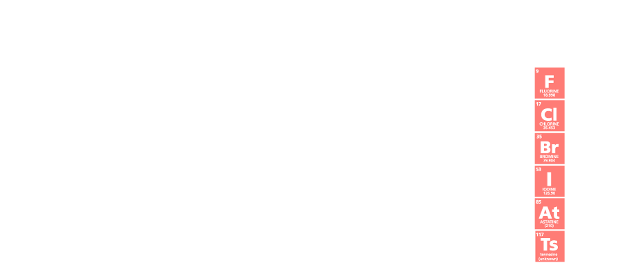
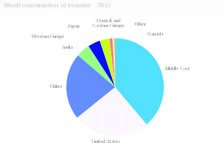
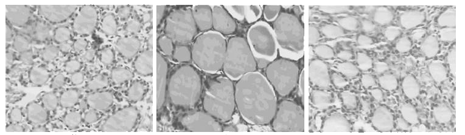
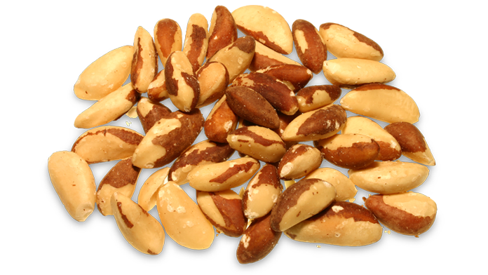

Índice
Flúor, Bromo e Iodo
Estes três elementos têm algo em comum, são todos halogênios.Isso se refere ao seu grupo na tabela periódica:
Não tenho muito a dizer sobre os outros três halogênios: Cloro, Ástato, tenessino. Ástato, é o elemento mais raro que ocorre naturalmente na Terra porque tem uma meia-vida de apenas 8 horas, então, onde quer que apareça, não ficará por muito tempo, decairá em bismuto ou polônio, dependendo do ambiente.
Tenessino foi descoberto em 2016, e é tão instável que desaparece em 20 - 50 milissegundos.
Ao ler a palavra Cloro,você deve imaginar o cheiro de uma piscina ou casa de banho, porque é isso que é. Comumente usado como desinfetante na água, evapora facilmente, causando o cheiro com o qual você está familiarizado. Este vapor é altamente tóxico e infelizmente é absorvido facilmente, tanto pela pele como pelos pulmões. O cloro também é comumente adicionado à água da torneira, então esse é outro motivo para ter filtros de água não apenas para a torneira, mas também para o chuveiro e a banheira. Os filtros são muito eficazes contra o cloro. Todos devemos apreciar o cloro de no entanto, como toda a vida depende disso.
Agora que temos os halogênios 'menores' fora do caminho, vamos para as coisas impactantes.
Flúor
Aposto que você espera que eu especule sobre o flúor calcificando sua glândula pineal agora, e embora eu ache que isso possa ser um ponto significativo, não há necessidade de recorrer a conjecturas, porque a toxicidade do flúor é muito simples de entender.
A partir de setembro de 2020, 75 estudos investigaram a relação entreflúor e QI, e 67 desses estudos encontraram QI reduzido em humanos, particularmente em crianças [1]
Mais de 80 estudos em animais mostrando que a exposição elevada ao flúor prejudica a cognição, a aprendizagem e a memória. [2]
Infelizmente, a fluoretação continua em todos os lugares: pasta de dente, água da torneira (se você não tiver sorte), frigideiras antiaderentes, cola, repelentes de água e muitos outros.
Mesmo se você tiver um filtro de água com flúor, o que você acha que os animais da cadeia alimentar estão bebendo? A irrigação também é uma prática amplamente difundida na agricultura, de modo que os vegetarianos são ainda mais atingidos, e mesmo a compra de orgânicos não vai remediar isso.
Então, quanto a exposição ao flúor aumentou na sociedade? Quando os dentes adultos crescem durante a adolescência, a presença de flúor excessivo causará uma condição chamada fluorose o que não é perigoso, mas é muito óbvio: você tem pequenas áreas brancas nos dentes, muitas vezes parece que alguns pequenos pedaços de papel branco são colocados nos dentes.
Como a fluorose pode ser autodiagnosticada, não pode ser perdida ou diagnosticada erroneamente, é uma boa métrica ver como a exposição excessiva ao flúor parece historicamente.
Bromo
O bromo não é tão tóxico quanto o flúor, mas por outro lado é muito mais comum. O bromo, assim como o flúor, atua como um retardador elétrico, isto impede seus neurôniosde comunicar uns com os outros [3]
Por esta razão, os médicos o usavam como sedativo para pacientes maníacos e hiperativos. Isso foi claro uma ideia horrível,semelhante a bater na cabeça de alguém com um martelo para acalmá-lo. Quando os neurônios não podem se conectar corretamente, você obviamente obtém problemas de saúde mental. A Wikipedia diz [4] que o bromo estava causando diretamente 5-10% das internações em hospitais psiquiátricos na época, quando foi prescrito pelos médicos como sedativo. Um dos sintomas diagnósticos da toxicidade clínica do bromo é a psicose.
Costumava haver iodo de potássio no pão, mas na década de 1980 eles o substituíram por bromato de potássio.
O bromo também é comumente encontrado em refrigerantes, tecidos, amaciantes de roupas, pesticidas, corantes, colchões, móveis, interiores de carros, eletrônicos, medicamentos prescritos, cosméticos e retardadores de fogo.
Os sintomas típicos da toxicidade do bromo são nevoeiro cerebral, psicose, convulsões, delírio, dores de cabeça, fadiga, ataxia, perda de memória e até mesmo a incapacidade de andar. Mas não a morte!
Sempre que você ver algo com brom-algo na lista de ingredientes, fique longe disso. Quanto menos bromo você tiver no corpo, melhor a eletricidade fluirá pelo seu corpo. O mesmo é provavelmente verdade para Orgone / Chi.
Iodo
O iodo foi descoberto em 1811, quando o químico Bernard Courtois procurava novas maneiras de coletar potássio e amônio para explosivos durante as guerras napoleônicas. Bernardo queimou a alga marinha,e, sem saber, isolou o iodo das cinzas, quando usou ácido sulfúrico por engano. Kelp tem a maior concentração de iodo de todas as formas de vida conhecidas, então ele foi capaz de ver o vapor violeta recristalizar. O nome iodo vem da palavra grega iodes, que significa roxo.
De todos os nutrientes que sabemos que o corpo humano necessita, o iodo é de longe o mais pesado com uma massa atômica de 127. O corpo médio contém apenas 15-20mg de iodo [6] que é a mesma quantidade encontrada em uma colher de sopa de alga marinha!
30% do iodo do corpo é encontrado na glândula tireóide. A maioria das pesquisas sobre iodo se concentra na tireóide por esse motivo.
Os hormônios da tireoide são chamados de T 3 e T 4 por causa do número de átomos de iodo que contêm.
O iodo é essencial em todas as células metabolicamente ativas para regulação da atividade enzimática e síntese de proteínas. Muitas crianças costumavam ter sintomas realmente desagradáveis de deficiência de iodo no passado, então começaram a adicionar iodo ao sal de mesa (que você absolutely não deve consumir, você só deve comer sal marinho real), o que fez os piores sintomas desaparecerem. Esta medida extremamente simples de suplementação de iodo é anunciada como uma das medidas de saúde pública mais bem-sucedidas que já foram realizadas. Ainda hoje, a maior parte do iodo que as pessoas consomem é do sal de mesa, a maior parte do resto é de frutos do mar.
A ingestão média de iodo é de 0,216 mg e o RDA é 0,220mg. Wikipedia, jornalistas e outras 'autoridades de saúde' querem que você acredite que a deficiência de iodo é rara. Como sempre,eles estão errados. Sua compreensão geral da nutrição é se você fica doente ou não o suficiente para ser hospitalizado. Não há literalmente nenhum conceito de saúde nos cuidados de saúde modernos. Basta olhar para a comida que lhe dão nos hospitais, isso deve dizer tudo.
As principais autoridades de saúde dizem que o excesso de iodo é mais perigoso do que qualquer risco de deficiência, porque é raro, dizem eles. Eles não dizem que bromo e flúor vão inibir suas células de absorver iodo [7] , aumentando assim nossa demanda por iodo.
Eles não mencionam que os pesticidas inibem o iodo [8] nem dizem que o iodo no sal é instável, portanto, qualquer exposição ao ar esgotará o sal de iodo. Leva de 20 a 40 dias para metade do iodo desaparecer no ar [9].
O sal de mesa é duas coisas: cloreto de sódio e uma pequena quantidade de iodeto de potássio. Como o cloro também é um halogênio, ele competirá com o iodo, tornando-o literalmente a pior maneira de suplementar o iodo que se poderia imaginar. Isso confunde a mente, como pode ser que todas as principais autoridades de saúde mentem sobre basicamente tudo, e todas as medidas para a saúde parecem ser as maneiras mais poderosas de nos envenenar?
De acordo com autópsias, mais de 50% da população tem células da tireoide aumentadas[6]: também conhecido como bócio, o sintoma número 1 da deficiência de iodo.
O que os médicos dizem sobre isso? Eles sustentam que o bócio não é algo para se preocupar, a menos que você tenha câncer. Eles não podem ganhar dinheiro dando-lhe os nutrientes que você precisa para consertar sua tireóide, mas quando você tem câncer, eles podem ganhar dinheiro com você, então é quando eles entram em ação e se envolvem. Engraçado como isso funciona, né?
As recomendações dietéticas devem ser suficientes para prevenir o bócio, mas aparentemente não é. Mesmo que não fosse assim, mesmo que a função da tireoide de todos fosse ótima, ainda nos beneficiaríamos de uma maior ingestão de iodo porque reduz os níveis de bromo e flúor.
Uma peça do quebra-cabeça metabólico é deficiência de iodo, outro é o deslocamento do iodo por flúor e brometo,e uma terceira peça é deficiência de selênio.
É importante que você entenda todo o quebra-cabeça antes de tentar resolvê-lo. Isso não é complicado, acredito que tudo o que você precisa saber está neste artigo, então, na pior das hipóteses, releia-o algumas vezes.
Um estudo sobre tireoidite descobriu que os níveis de flúor em sua água potável foi duas vezes mais importante como se você tivesse um histórico familiar de tireoidite..! [10]
A OMS designou a deficiência de iodo como a causa mais evitável de retardo mental no mundo. [11]
O iodo foi o #1 medicamento prescrito por médicos há quase um século: Megadoses de 50mg eram comumente prescritas, o que é mais de duas vezes a quantidade de iodo no corpo inteiro de um cidadão médio e isso foi feito como uma panaceia quando eles não sabiam qual era a doença subjacente, tamanha é a potencial vantagem do iodo.
Aqui está uma citação de Albert Szent-Györgö, o Prêmio Nobel que descobriu a vitamina C:
"Quando eu era estudante de medicina, o iodo na forma de KI [iodeto de potássio] era o remédio universal. Ninguém sabia o que fazia, mas fazia alguma coisa. Nós, estudantes, costumávamos resumir a situação nesta pequena rima:
"Se você não sabe onde, o que e por que
prescrever então K e I"Recentemente foi provado queo iodo é um antioxidante[12] o que pode explicar parte de sua eficácia médica. Também é irritante, então não tome isso como "o iodo é automaticamente bom".
As mulheres aumentaram a necessidade de iodo, o que é um grande motivo as mulheres anseiam por frutos do mar mais do que os homens. A razão para isso são seus seios e ciclos de fertilidade: na fase lútea, os seios podem crescer até 15% após a ovulação [13] o que não é inchaço: é proliferação celular. Como os seios não devem ficar permanentemente maiores a cada ciclo menstrual (imagine isso!)as células em excesso são eliminadas com iodo.
Quando não há iodo suficiente disponível para eliminar as células excedentes, cistos benignos são formados!Isso é chamado alterações fibrocísticas da mama.
90% DAS MULHERES AMERICANAS TÊM ALTERAÇÕES FIBROCÍSTICAS NA MAMA[94]
100 anos atrás,apenas 3% das mulheres teve doença fibrocística [14]
Se você alimentar animais com uma dieta livre de iodo, eles desenvolverão doença fibrocística [15] mas quando você suplementar iodo, as alterações são revertidas [16]
Por causa do ciclo de fertilidade,as mulheres são 5-10x mais propensas a desenvolver problemas de tireóide que provavelmente ocorre devido à insuficiência de iodo e cofatores necessários (selênio, magnésio, vitamina C e vitaminas do complexo B) sendo esgotados
Na China, o tratamento tradicional contra cistos nos seios é colocar algas marinhas neles, para absorver o iodo através da pele.
Consumir algas marinhas é uma forma potente de consumir iodo,pois contém baixas quantidades dos co-fatores necessários para o iodo. Afinal, a alga é capaz de usar efetivamente as quantidades extremas de iodo que contém!
No entanto, a alga não é tudo o que você precisa: o iodo isolado é tóxico para você.Se você comesse uma tonelada de algas marinhas, você se sentiria mal. A maneira de fazer isso é comer uma pequena pitada de alga marinha diariamente, certificar-se de que você está recebendo co-fatores suficientes (selênio e magnésio, o mais importante) e aumentar lentamente a dose de alga marinha enquanto se sentir bem. Algumas pessoas vão absurdamente alto. Você pode encontrar toneladas de pessoas online que estão comendo 50mg por dia (!), o que, como você deve se lembrar, é mais que o dobro do que o corpo humano típico contém. Eu não recomendo medidas tão drásticasa menos que você realmente saiba o que está fazendo.
O iodo pode remover flúor e bromo do seu corpo!
Isso acontece porque todos são halogênios, portanto são quimicamente semelhantes e, portanto, competem pelos mesmos lugares do corpo. Esta é uma faca de dois gumes:quando você toma uma grande dose de iodo, seu corpo será inundado com bromo e flúor tóxicos que foram despejados das células.Isso é bom, porque permite que você se livre deles, mas vai te machucar. Quanto mais devagar você passar por esse processo de facilitar a suplementação de iodo, mais fácil será para o corpo expelir as toxinas com danos mínimos.
É extremamente importante que você entenda que seu corpo está repleto de DÉCADAS de acúmulo de flúor e bromo. Se você tentar desintoxicar rapidamente, poderá causar sérios danos a si mesmo.
Aumentar a ingestão de sal marinho e um pouco mais de água (para que você faça mais xixi) ajudará nesse processo de desintoxicação.
O iodo em si é ruim se você não tiver os nutrientes que seu corpo necessita como co-fatores.O mais importante é o Selenium, que discutiremos agora.
Selênio
A imagem da esquerda mostra as células da tireóide de ratos normais. A imagem do meio é de ratos que foram submetidos a quantidades extremas de iodo. A imagem certa são quantidades extremas de iodo e selênio.
A menos que você esteja comendo grandes quantidades de frutos do mar, cordeiro, carne bovina, frango ou ovos; você provavelmente é subclinicamente deficiente em selênio. Você precisa ter certeza de que está recebendo quantidades ideais de selênio antes de aumentar a ingestão de iodo.
Uma castanha-do-brasil fornece 130% da RDA para selênio.
Referências
- [1] Fluoride & IQ
- [2] Fluoride & Cognition in Animals
- [3] Wikipedia: Bromine
- [4] Wikipedia: Bromism
- [5] Global Bromine Consumption
- [6] Nutrient Profile: Iodine
- [7] Fluoride Inhibits Sodium/Iodine Cotransporter
- [8] Pesticides Inhibits Sodium/Iodine Cotransporter
- [9] Bioavailability of Iodized Salt
- [10] Fluoride & Thyroiditis
- [11] WHO: Iodine & Mental Retardation
- [12] Is Iodine An Inorganic Antioxidant?
- [13] Fibrocystic Breast Changes
- [14] Extrathyroidal Benefits of Iodine
- [15] Iodine-Free Diet Induces Fibrocystic Disease in Rats
- [16] Wikipedia: Sodium/Iodine Cotransporter
- [91] Iodine Reverses Fibrocysts in Rat Thyroids
- [96] Bioavailability of Iodine
- [] Iodine & Thyroiditis (Animals)
- [] Iodine & Thyroiditis (Humans)
- [] Catalogue of Iodine Research
- [] Iodine & Kelp